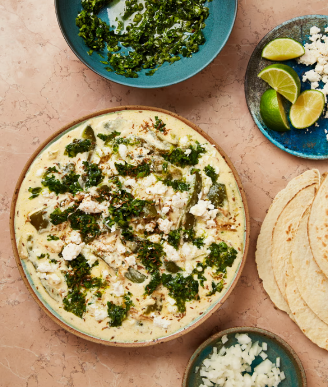

Creamy green peppers with jalapeño salsa

This is our take on rajas con crema, a Mexican dish that uses charred fresh poblano peppers. They’re hard to get hold of in the UK, so we’ve used green bell peppers instead (although by all means use poblanos if you can find some). Serve the peppers on a heated serving dish, so they don’t cool down too quickly.
For the salsa
To serve
Put a tablespoon of oil and the sliced onion in a medium saute pan on a medium-high heat, and cook, stirring occasionally, for five minutes, until softened. Add the garlic and a teaspoon of cumin, cook for five minutes more, stirring frequently, until lightly caramelised and fragrant, then take off the heat.
Heat the oven to 240C (220C fan)/475F/gas 9 (or higher if your oven allows). Put the peppers on a baking tray lined with greaseproof paper and rub them all over with the remaining quarter-teaspoon of oil. Roast for 15 minutes, until the skins are blistered in places, then remove, cover with foil and set aside for 15 minutes, until cool enough to handle. Carefully peel and discard the skins, seeds and stems, then cut the flesh into 1½cm-wide strips and add to the onion pan.
For the salsa, put the jalapeños, lime juice and oil in a bowl with a quarter-teaspoon of salt and mix well.
Mix the creme fraiche, soured cream and mozzarella in a bowl with three-quarters of a teaspoon of salt and a good grind of pepper. Put the onion pan back on a medium-high heat and, once hot, stir in the cream mixture, turn down the heat to medium and cook for two to three minutes, until the cheese has melted and heated through. Transfer to a warmed shallow bowl.
Stir the coriander through the salsa, then spoon half of it over the creamy peppers. Top this with a quarter of the manouri or feta, followed by the remaining quarter-teaspoon of cumin. Serve with tortillas, chopped onion, lime wedges and the remaining manouri orfeta and salsa in bowls on the side.